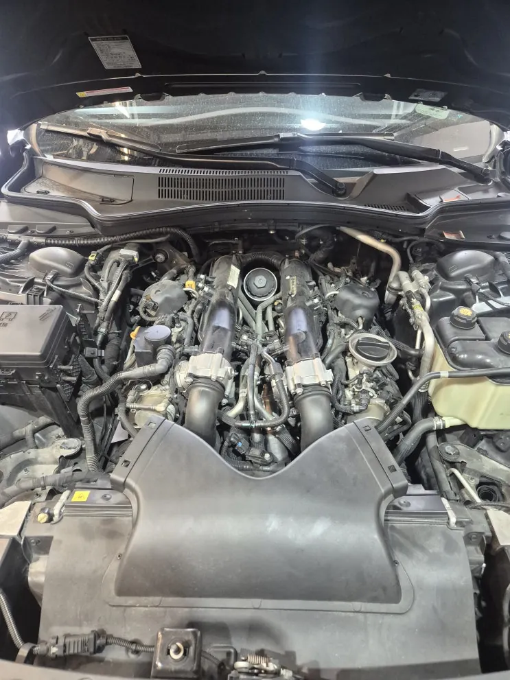
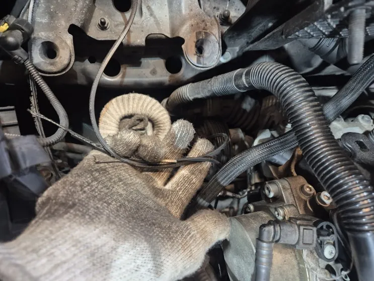
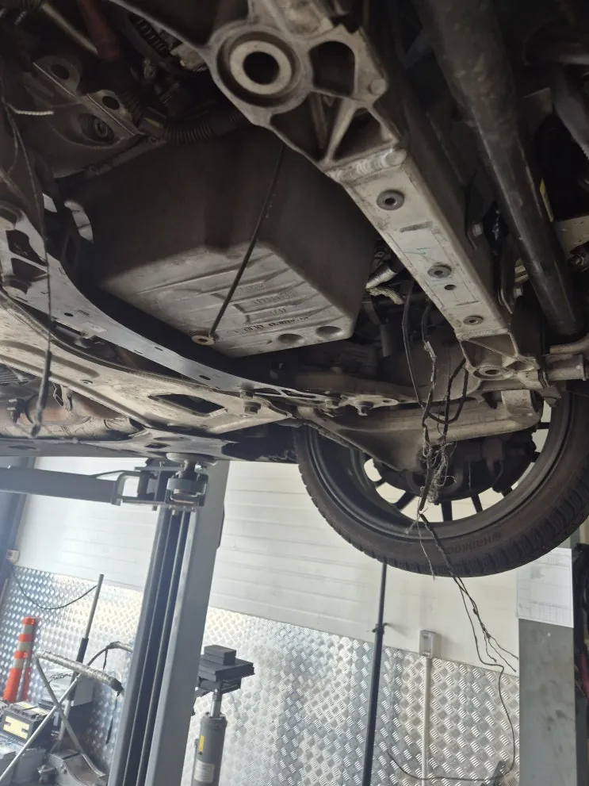
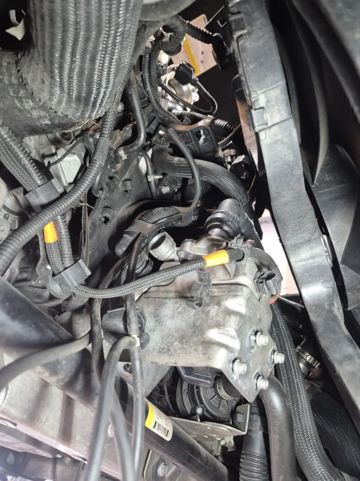
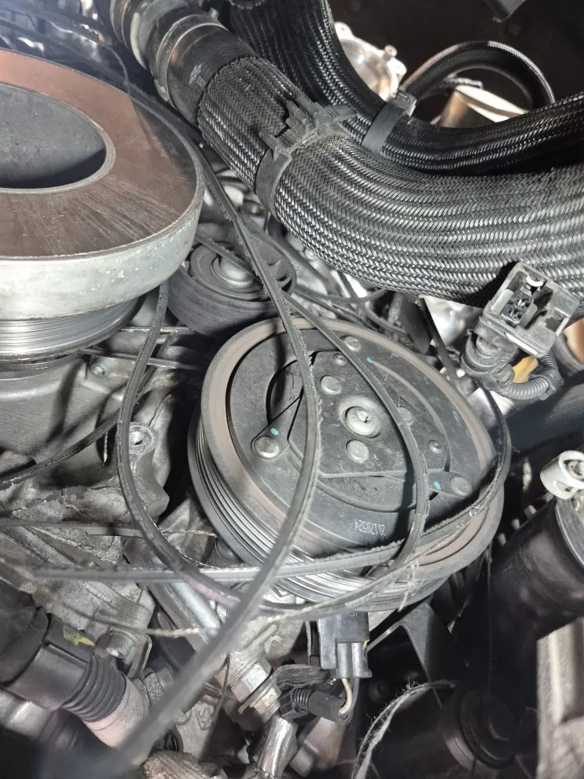
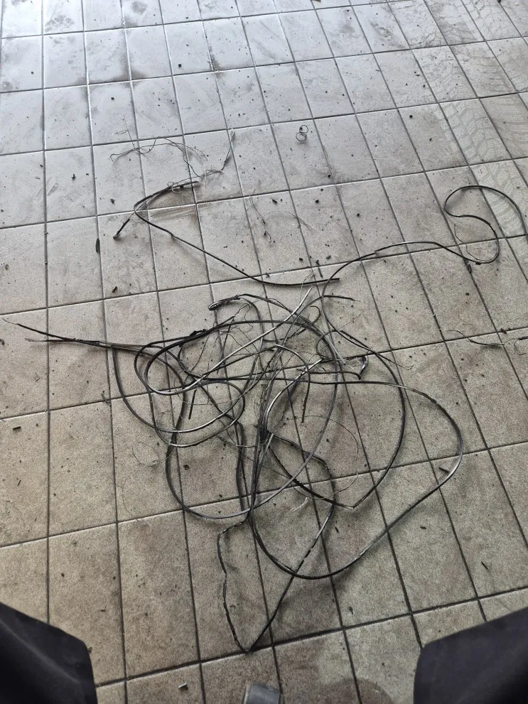
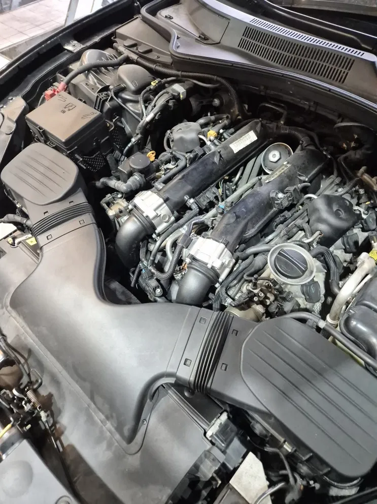

콰트로포르테 GTS V벨트 끊어짐 — 엉킨 벨트 제거와 벨트·베어링 교체
At a glance한눈에 보기
- 차량
- 마세라티 콰트로포르테 GTS
- 증상
- V벨트 끊어짐
- 진단
- V벨트가 끊어진 채 입고된 콰트로포르테 GTS는 엔진룸 점검에서 주변 부품의 2차 손상이 없었습니다. 끊어지며 엉킨 벨트를 모두 걷어 내고 신품 벨트와 베어링으로 교체한 뒤 시운전으로 확인했습니다.
- 작업
- 엔진룸 2차 손상 점검
- 끊어진 벨트 제거
- V벨트 교체
- 베어링 교체
- 시운전

입고 증상
V벨트(겉벨트)가 끊어진 콰트로포르테 GTS가 입고됐습니다. 끊어진 벨트가 주변 부품을 상하게 했을 수 있어 엔진룸부터 꼼꼼히 점검했습니다.
V벨트는 엔진의 회전력을 발전기(제네레이터), 파워스티어링, 워터펌프, 에어컨 컴프레서에 나눠 전달합니다. 끊어지면 발전기가 멈춰 시동이 꺼지거나, 워터펌프가 멈춰 엔진이 과열될 수 있습니다.


손상 점검
벨트 손상이 심해 그대로 두었다면 주변 부품까지 상할 수 있는 상태였습니다. 끊어진 벨트가 엔진 쪽으로 말려 들어가면 다른 부품이 연달아 손상되고 엔진에 큰 피해가 생길 수 있습니다.
이번 차량은 다행히 2차 손상이 생기기 전에 입고돼 주변 부품에는 문제가 없었습니다.


작업 — 벨트 제거와 교체
끊어지면서 엉킨 벨트 조각을 모두 걷어 낸 뒤 신품 벨트와 베어링으로 교체했습니다. 조립을 마치고 시운전을 충분히 해 벨트 회전과 엔진 상태를 확인한 다음 출고했습니다.


V벨트 교환 시기
로건서비스는 V벨트 교환을 60,000km 전후로 안내하지만, 운행 조건에 따라 상태가 달라 정기 점검에서 직접 보는 것이 중요합니다. 갈라짐이나 마모가 보이면 끊어지기 전에 미리 바꾸는 편이 안전합니다.
엔진룸에서 벨트 소리가 나거나 교환 시기를 놓쳤다면 점검을 권합니다. 카톡으로 먼저 상담하셔도 됩니다.

자주 묻는 질문
V벨트가 끊어지면 바로 차를 세워야 하나요?
V벨트가 끊어지면 발전기와 워터펌프가 멈춰 시동 꺼짐이나 엔진 과열이 생길 수 있고, 끊어진 벨트가 엔진 쪽으로 말려 들어가 2차 손상이 날 수도 있습니다. 운행을 멈추고 점검받는 것이 안전합니다.
이 작업의 원문 기록: 네이버 블로그에서 보기
Consultation
마세라티 콰트로포르테 GTS, 비슷한 증상이 있나요?
증상 사진이나 경고등 화면을 카톡으로 먼저 보내 주시면 확인 후 안내해 드립니다. 전국 탁송 상담 가능.